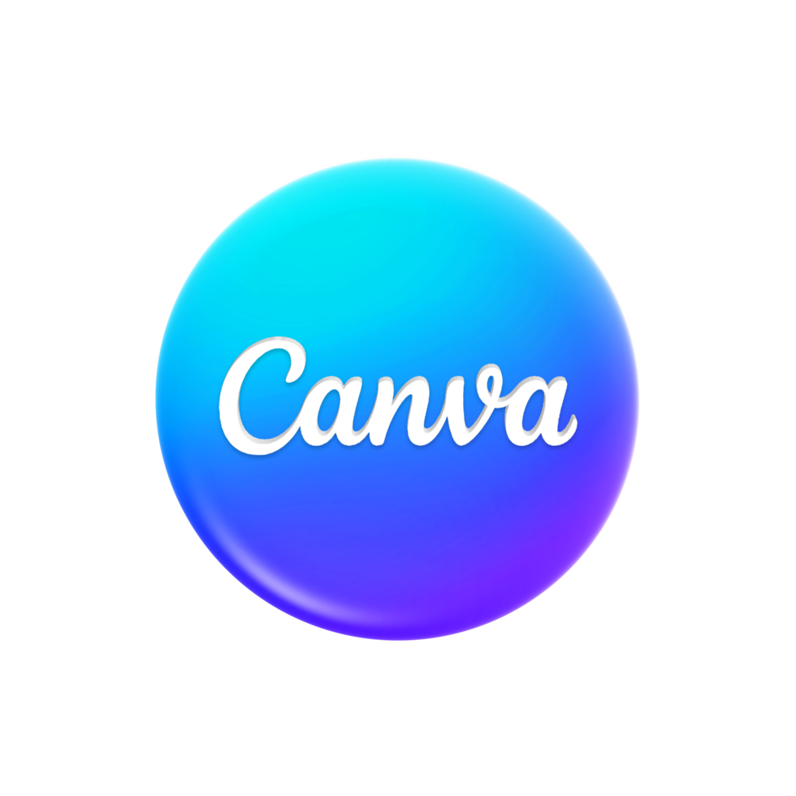

Diseño & Herramientas

Canva

Figma

Adobe Illustrator
CapCut
Desarrollo Front-end

HTML

CSS

JavaScript
Soy una aprendiz comprometida con crecer un poquito cada día. Actualmente estudio Diseño Gráfico en la Universidad Uninter y me dedico a explorar herramientas como Canva, Adobe Illustrator y Figma para crear soluciones visuales bonitas, funcionales y con propósito. Mi trayectoria también incluye conocimientos básicos de HTML, CSS y JavaScript, adquiridos durante mis estudios de programación Front-end, que aplico en proyectos personales para desarrollar experiencias visuales e interactivas. Además del diseño, estudio idiomas por mi cuenta —inglés, francés y español— porque creo que comprender otras culturas amplía nuestra creatividad. Sigo construyendo mi camino con paciencia, curiosidad y ganas de marcar la diferencia.
Canva
Figma
Adobe Illustrator
CapCut
HTML
CSS
JavaScript
Aquí encontrarás publicaciones para redes sociales, logotipos y diseños para la promoción de productos y servicios.
Anuncio Petshop
Diseño de anuncio creado en Canva para la tienda de mascotas Pet Estrela. El layout utiliza un fondo temático con huellas, mascotas en primer plano y tipografía divertida, transmitiendo cercanía y confianza. Incluye eslogan y llamadas a la acción para redes sociales, asegurando una comunicación clara y atractiva.
Arte estática
Arte desarrollada para un proceso de selección en diseño gráfico en la empresa de marketing Rasmle. El layout utiliza contraste entre tipografía moderna y elementos visuales dinámicos, como íconos de redes sociales y el apretón de manos saliendo de portátiles, transmitiendo conexión y confianza. La composición refuerza el mensaje central sobre el poder del marketing digital para transformar pequeñas ideas en grandes negocios.

Promoción de pizza
Desarrollé un layout vibrante para la promoción “Pide 2, llévate 3”, con imágenes realistas de pizzas y elementos gráficos que resaltan sabor y calidad, haciendo que el mensaje sea claro y atractivo en redes sociales.
Invitación de boda
Invitación de boda clean y moderna, con tonos claros, detalles dorados y tipografía manuscrita. Busqué equilibrar simplicidad y sofisticación, manteniendo la información organizada y fácil de leer.

Matrícula escolar – Publicación
Arte promocional creada para un proceso de selección en diseño gráfico, centrada en la promoción de matrículas escolares. Trabajé una composición ligera y acogedora, con tipografía amigable y colores vivos para transmitir afecto y confianza.
Curso de inglés Kids
Creé un layout con colores suaves y elementos infantiles para que la comunicación fuese lúdica y atractiva para padres y tutores. Utilicé iconos y divisiones claras para facilitar una lectura rápida y destaqué el valor diferencial del curso con botones de acción visibles.
Certificado de curso de informática
Desarrollé un certificado con un estilo más tradicional e institucional. Elegí tonos azules para transmitir confianza y utilicé un marco clásico para darle un aire más serio. La tipografía también fue seleccionada para reforzar esta autoridad.
Publicación para examen de ingreso
Trabajé con colores vivos y una imagen juvenil para crear conexión con el público. La idea fue diseñar una publicación que llamase la atención y dejase el mensaje claro, con un botón de CTA directo que facilitase el clic.

Marido en alquiler – Publicación
Arte promocional creada para la promoción de servicios de reparaciones menores. Trabajé una composición limpia y directa, con iconos intuitivos y colores neutros para transmitir profesionalidad, claridad y confianza al público.

Logo – Cosméticos veganos
Diseñé un logo con formas orgánicas y tipografías suaves, usando tonos tierra para reflejar la propuesta natural y vegana de la marca. Busqué transmitir ligereza y conexión con la naturaleza.
Logo – Escuela de tecnología Novatec
Desarrollé una identidad enfocada en mujeres en tecnología. Utilicé neón morado sobre negro para transmitir innovación y empoderamiento, con una tipografía que combina elementos tecnológicos y femeninos. El globo central representa la conexión y la idea de comunidad.

Folleto – Açaí
Creé una publicación vibrante y apetitosa, combinando colores intensos y fotos del producto en primer plano para despertar el deseo de consumo. La idea fue reforzar la practicidad del servicio de delivery con un visual llamativo.

Publicación – Casa de Té
Desarrollé un layout acogedor con colores suaves y tipografías amigables. Utilicé una composición centrada para destacar la dirección y el producto, creando una atmósfera tranquila y acogedora, ideal para una casa de té.
Publicidad de energético
Diseñé este layout con un estilo fuerte y dinámico. Utilicé rayos, neón verde y un fondo cálido para evocar algo tropical, energético y potente. Los textos tienen alto impacto visual, siguiendo la estética típica de productos energéticos.

Producto digital
Creé una agenda semanal digital orientada al público femenino, diseñada para ayudar a organizar estudios, tareas y cuidados de la salud. Utilicé un mockup de tablet, colores rosa y morado e ilustraciones de fresas para transmitir delicadeza y diversión, haciendo el producto atractivo para descargar.

Portada de libro – Romance
Elegí una imagen de silueta al atardecer para darle un tono romántico y misterioso. Utilicé tipografías manuscritas y serifadas para reforzar el drama de la historia y mantuve un layout limpio para no distraer la atención del título.

Portada de libro – Autoayuda
Creé un visual suave y reflexivo con una imagen simbólica (flor en la mano). El fondo desenfocado ayuda a centrar la atención en el mensaje, y la tipografía manuscrita aporta un toque más personal, ideal para un diario de gratitud.

Portada de libro
Utilicé una foto de mascota para generar empatía inmediata. Aposté por tonos claros y una tipografía divertida, creando un ambiente ligero y emocional para un libro de autoayuda centrado en la relación humano-animal.
Tienda de productos digitales Ko-fi: Creación y venta de planners, trackers y vision boards bilingües (PT/EN), incluyendo identidad visual y materiales de promoción.
Instagram – @themusemode.co: Producción de contenidos visuales para redes sociales, creación de paleta de marca propia, publicaciones y banners.
Conéctate conmigo